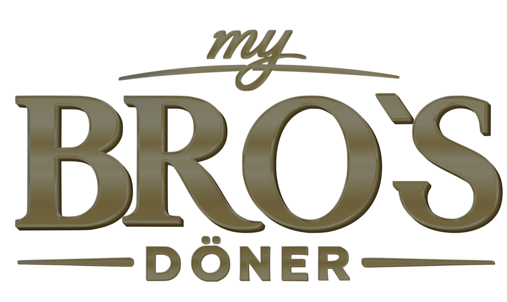

Bestellen / QR
Starttafel mit QR-Code und Kontaktdaten.
Hier kannst du jede TV-Tafel einzeln öffnen, prüfen und als PNG speichern.
Zentrale Preise: Wenn BRO’S-OS läuft, liest Webseite/TV automatisch http://localhost:8790/api/catalog. Wenn nicht erreichbar, bleibt die lokale Sicherung products.js aktiv.

Starttafel mit QR-Code und Kontaktdaten.
Klassiker, Bowls und Boxen im alten 16:9-Layout.
Döner-Menüs, Nugget-Menü und Kids-Menü.
Sparangebote mit Getränk.
Getränke, Snacks und Extras.
Für TV 2: wechselt zwischen Bestellen und Sparangeboten.